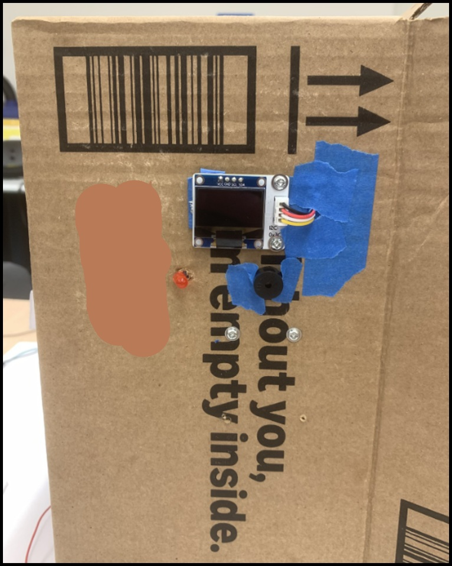
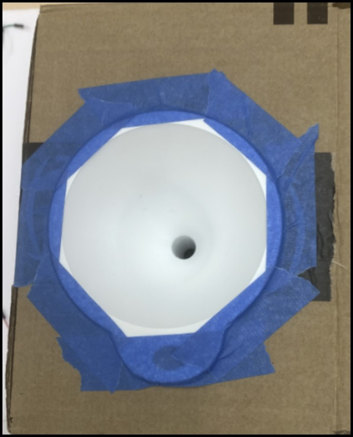
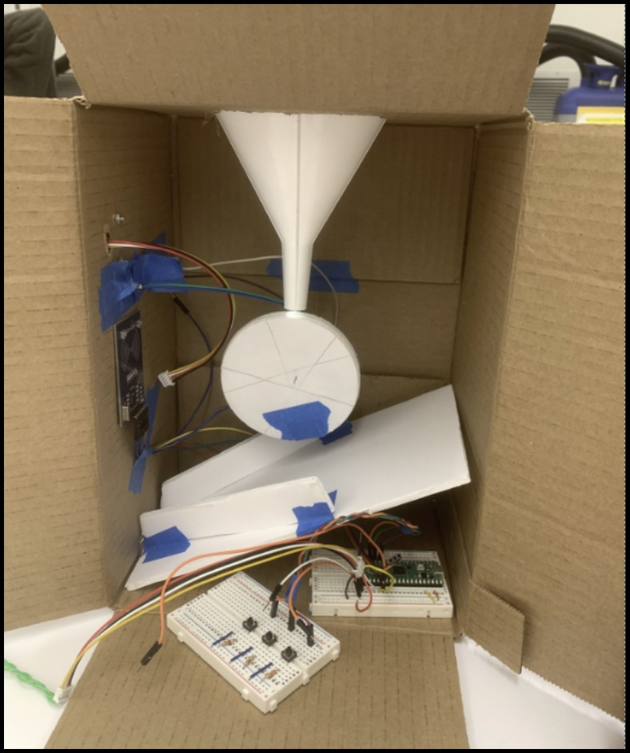
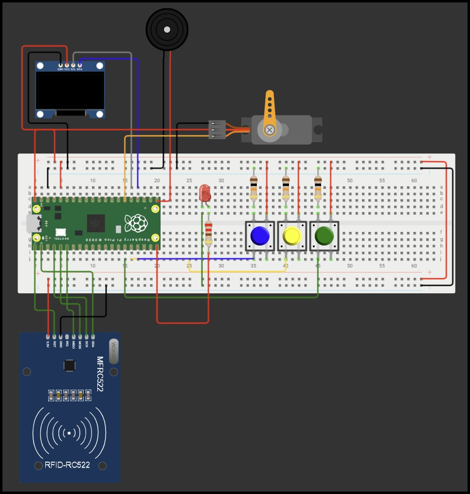

Embedded Systems | MicroPython | I2C & SPI Interfacing | Hardware Design
Missed or double-dosed medication can lead to serious health complications, and existing automated dispensers are often prohibitively expensive. For our EE 3280: Microcontroller System Design course, my team and I developed the Pill Pusher: a secure, automated dispensary system running on a Raspberry Pi Pico.
Our team designed a system that utilizes a secure timer lock. The user inputs their dosage schedule via GPIO push buttons, tracked via an I2C SSD1306 OLED display. Upon timer expiration, an active buzzer and multi-threaded LED alert the user. To prevent accidental overdoses, the SG90 servo motor will only actuate the mechanical dispensary if the correct patient ID is verified via the SPI RC522 RFID scanner.



As my primary technical contribution to the team, I engineered a highly modular, object-oriented firmware architecture. Rather than writing a monolithic script, I ensured hardware drivers (like mfrc522.py) were strictly separated from custom abstraction layers.
main.py): Orchestrates the primary logic loop, handling the transition from "Timer" to "Alarm" to "Dispense" based on peripheral callbacks.pled.py): Utilized the MicroPython _thread library to run the LED blinking sequence on a separate core, preventing the sleep() functions from blocking the main RFID scanning loop.pdisplay.py): Wrote custom frame-buffer logic to render a dynamic "Radial Wipe" animation on the OLED during the 5-second active scanning window.You can interact with a digital twin of the hardware logic via the Wokwi simulation link below, or review the comprehensive final presentations detailing the hardware block diagrams and system specifications. All MicroPython source code is publicly available for review in my GitHub repository.
